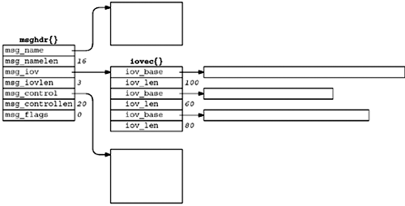
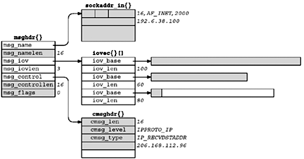
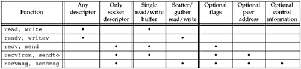

| [ Team LiB ] |
|
14.5 recvmsg and sendmsg FunctionsThese two functions are the most general of all the I/O functions. Indeed, we could replace all calls to read, readv, recv, and recvfrom with calls to recvmsg. Similarly all calls to the various output functions could be replaced with calls to sendmsg.
Both functions package most arguments into a msghdr structure.
struct msghdr {
void *msg_name; /* protocol address */
socklen_t msg_namelen; /* size of protocol address */
struct iovec *msg_iov; /* scatter/gather array */
int msg_iovlen; /* # elements in msg_iov */
void *msg_control; /* ancillary data (cmsghdr struct) */
socklen_t msg_controllen; /* length of ancillary data */
int msg_flags; /* flags returned by recvmsg() */
};
The msg_name and msg_namelen members are used when the socket is not connected (e.g., an unconnected UDP socket). They are similar to the fifth and sixth arguments to recvfrom and sendto: msg_name points to a socket address structure in which the caller stores the destination's protocol address for sendmsg, or in which recvmsg stores the sender's protocol address. If a protocol address does not need to be specified (e.g., a TCP socket or a connected UDP socket), msg_name should be set to a null pointer. msg_namelen is a value for sendmsg, but a value-result for recvmsg. The msg_iov and msg_iovlen members specify the array of input or output buffers (the array of iovec structures), similar to the second and third arguments for readv or writev. The msg_control and msg_controllen members specify the location and size of the optional ancillary data. msg_controllen is a value-result argument for recvmsg. We will describe ancillary data in Section 14.6. With recvmsg and sendmsg, we must distinguish between two flag variables: the flags argument, which is passed by value, and the msg_flags member of the msghdr structure, which is passed by reference (since the address of the structure is passed to the function).
Figure 14.7 summarizes the flags that are examined by the kernel for both the input and output functions, as well as the msg_flags that might be returned by recvmsg. There is no column for sendmsg msg_flags because, as we mentioned, it is not used. Figure 14.7. Summary of input and output flags by various I/O functions.
The first four flags are only examined and never returned; the next two are both examined and returned; and the last four are only returned. The following comments apply to the six flags returned by recvmsg:
Implementations might return some of the input flags in the msg_flags member, so we should examine only those flag values we are interested in (e.g., the last six in Figure 14.7). Figure 14.8 shows a msghdr structure and the various information it points to. We assume in this figure that the process is about to call recvmsg for a UDP socket. Figure 14.8. Data structures when recvmsg is called for a UDP socket. Sixteen bytes are allocated for the protocol address and 20 bytes are allocated for the ancillary data. An array of three iovec structures is initialized: The first specifies a 100-byte buffer, the second a 60-byte buffer, and the third an 80-byte buffer. We also assume that the IP_RECVDSTADDR socket option has been set for the socket, to receive the destination IP address from the UDP datagram. We next assume that a 170-byte UDP datagram arrives from 192.6.38.100, port 2000, destined for our UDP socket with a destination IP address of 206.168.112.96. Figure 14.9 shows all the information in the msghdr structure when recvmsg returns. Figure 14.9. Update of Figure 14.8 when recvmsg returns. The shaded fields are modified by recvmsg. The following items have changed from Figure 14.8 to Figure 14.9:
Figure 14.10 summarizes the differences among the five groups of I/O functions we described. Figure 14.10. Comparison of the five groups of I/O functions. |
| [ Team LiB ] |
|